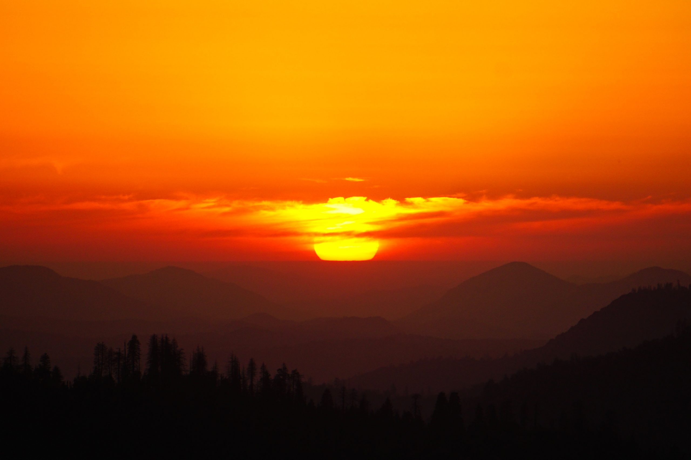
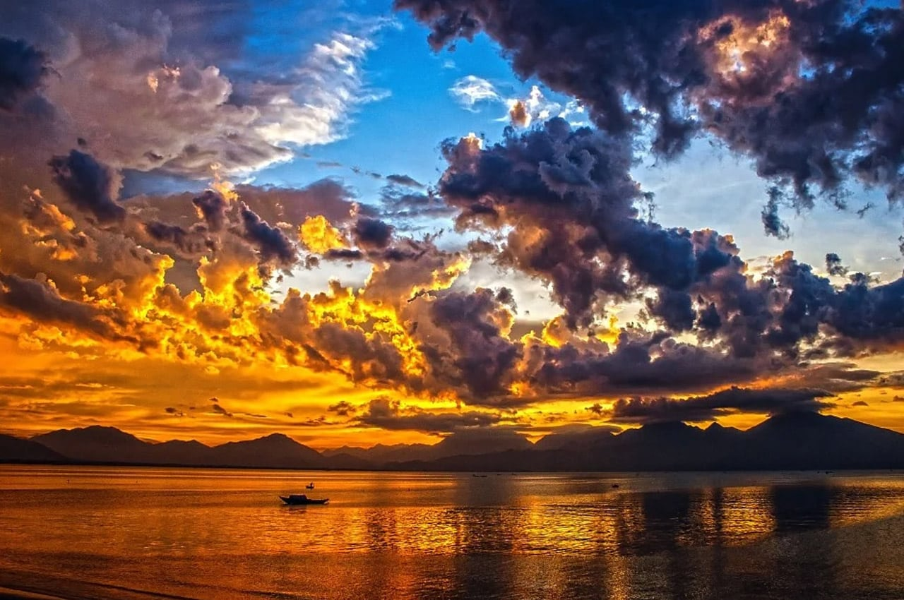
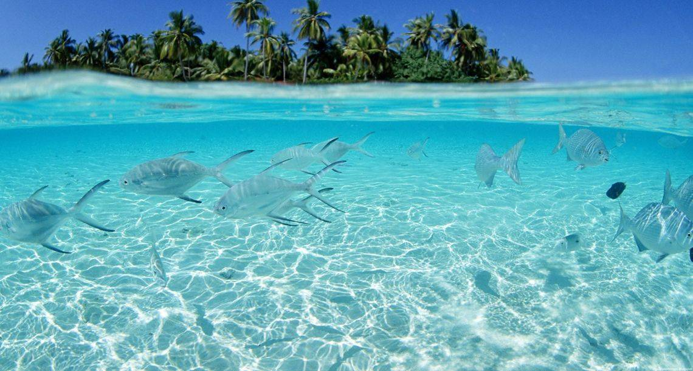
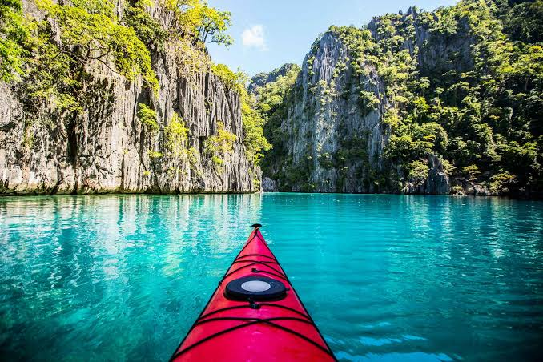

O Encanto do Pôr do Sol
A imagem mostra um pôr do sol sobre um grande corpo de água, cercado por montanhas ao fundo. O céu ocupa grande parte da paisagem e está repleto de nuvens volumosas e dramáticas, iluminadas pelos últimos raios de sol, que criam tons intensos de laranja, dourado, azul e roxo. A luz do entardecer também se reflete sobre a superfície da água, formando um caminho brilhante e alaranjado. Ao fundo, as montanhas aparecem em silhueta, criando um contraste marcante com o céu iluminado. No meio da água, há um pequeno barco, que reforça a sensação de tranquilidade e imensidão da paisagem. De modo geral, a imagem transmite uma atmosfera de serenidade, beleza e contemplação, destacando o contraste entre as cores vibrantes do céu e as formas escuras das montanhas e do barco.
Além disso, a presença do pequeno barco no centro da paisagem acrescenta um elemento humano à cena, fazendo com que o ambiente pareça ainda mais amplo e silencioso. A água calma reflete as cores do céu, enquanto as montanhas formam uma linha escura no horizonte, dando profundidade à imagem. A combinação entre o céu cheio de nuvens, o reflexo dourado e a tranquilidade do lago cria uma paisagem marcante, que transmite uma sensação de paz, liberdade e admiração pela natureza.


Aventura nas Águas Cristalinas
A imagem apresenta uma bela paisagem natural tropical vista a partir de um caiaque vermelho. Em primeiro plano, o caiaque está sobre uma água cristalina de cor azul-turquesa, criando a sensação de que o observador está navegando pelo local. Ao redor, há grandes paredões de rocha calcária, altos e verticais, cobertos por uma vegetação verde e densa. A luz do sol ilumina as rochas e a superfície da água, destacando as cores vibrantes da paisagem. A disposição das formações rochosas cria uma espécie de corredor que direciona o olhar para o fundo da imagem, transmitindo uma sensação de profundidade e aventura. De modo geral, a cena transmite tranquilidade, beleza e contato com a natureza, lembrando paisagens tropicais como as encontradas em Palawan, nas Filipinas.
A paisagem também transmite uma forte sensação de descoberta e aventura, principalmente pela presença do caiaque no centro da imagem. As águas tranquilas e transparentes permitem observar diferentes tons de azul, enquanto os enormes paredões rochosos criam a impressão de estar em um lugar isolado e preservado. A vegetação que cobre as montanhas acrescenta ainda mais vida à cena, formando um contraste entre o verde intenso, o cinza das rochas e o azul vibrante da água. Todo esse conjunto faz com que a imagem pareça representar um momento de exploração e contemplação em meio à natureza.

